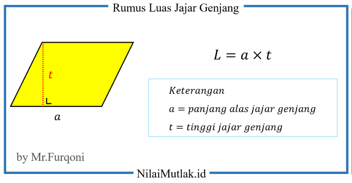

Rumus Jajar genjang

Nah jadi untuk menghitung luas jajar genjang anda dapat menggunakan rumus Luas=Alas×Tinggi atau L=AxT,Di
sini, "Alas" adalah panjang salah satu sisi jajar genjang, dan "Tinggi" adalah garis tegak lurus dari
alas
ke sisi yang sejajar.